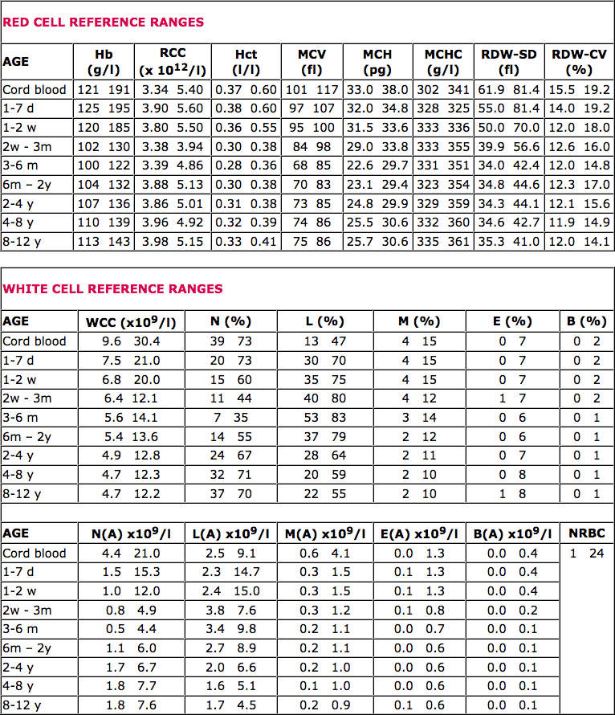
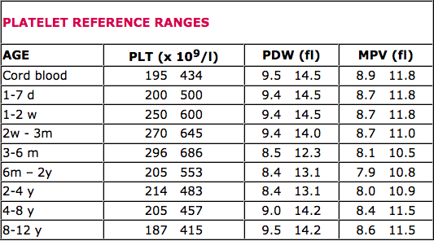

Microscopic Haematology / Paediatric Reference Ranges
A Practical Guide for the Laboratory

A Practical Guide for the Laboratory
Reference ranges for neonates and children
The importance of establishing a Reference Range for a particular population of subjects cannot be denied.
The availability of blood specimens from 'healthy' children led to the decision to use this group of subjects to establish Reference Ranges for neonates and children.
The particular population of children chosen was admitted to the urological ward for assessment of abnormal renal anatomy. These children were clinically well at the time of admission, had a normal urea and creatinine and a mid-stream specimen of urine devoid of cells, casts and organisms. Venous blood specimens were obtained during anaesthesia so as to avoid the stress of venepuncture affecting the blood count parameters.
Cord blood was also collected from 'post delivery' mothers. These mothers acted as potential cord blood donors for the Australian Cord Blood Bank.
A total of 927 subjects were used for this study. The Reference Ranges were calculated using the Percentile from each respective age group.
 